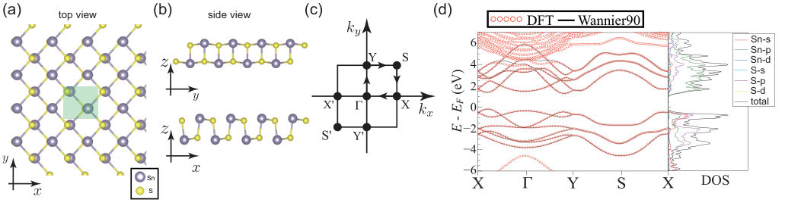
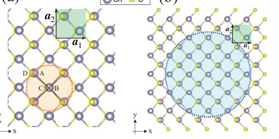
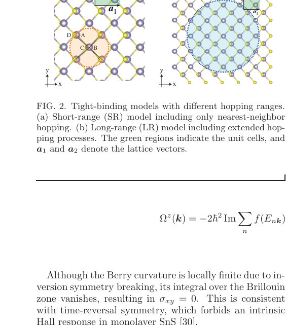
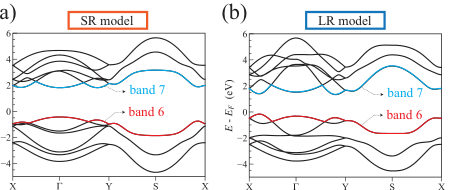
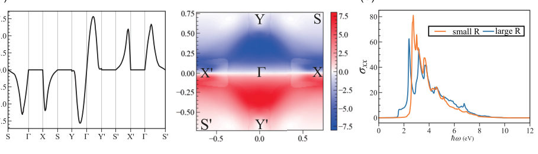

Authors: Yuki Kusunoki, Tomoaki Kameda, Katsunori Wakabayashi
Type: theory · Category: other · PDF: https://arxiv.org/pdf/2606.02851v1
Analysis basis: full PDF text, analyzed in chunks





Summary. This paper theoretically analyzes the shift current conductivity responsible for the bulk photovoltaic effect in monolayer SnS using an effective tight-binding model. By comparing short-range and long-range hopping approximations, the authors demonstrate that while the simple model captures the qualitative physics, the full long-range interactions are necessary for quantitative accuracy. This provides a transparent design tool for understanding photocurrent generation in 2D semiconductors.
Why it may be interesting. The detailed theoretical decomposition of the photocurrent into shift and injection components, coupled with the comparison between model approximations (SR vs. LR), provides a rigorous framework for understanding nonlinear optical responses in 2D materials.
Main problem. The study investigates the bulk photovoltaic effect (BPVE), specifically the shift current conductivity, in monolayer SnS.
Main result. The essential features of the shift current conductivity are captured by a minimal short-range tight-binding model, although long-range hopping processes provide quantitative corrections to peak positions and magnitudes.
Method. The analysis uses an effective tight-binding model derived from first-principles calculations, decomposing the shift current into transition intensity and a shift vector.
Model / system. The system is monolayer SnS, a 2D semiconductor. The model employs an effective tight-binding Hamiltonian (up to $12 imes 12$) comparing short-range (nearest-neighbor) and long-range hopping approximations.
Key observables. Shift current conductivity ($\sigma_{ ext{shift}}$), linear optical conductivity ($\sigma_{ij}(\omega)$), Berry curvature ($\Omega_z(\mathbf{k})$), transition intensity, and the shift vector ($R_{ij}^{nm}(\mathbf{k})$).
Important parameters / regimes. The analysis compares results derived from short-range (SR) versus long-range (LR) hopping models.
Assumptions / limitations. The analysis relies on constructing an effective model from DFT results and assumes the separation of the second-order current into shift and injection components.
Figures summary. Figures compare band structures and optical responses derived from SR and LR models, and show contour plots of the shift vector and transition intensity for both model types.
Paper structure. The paper develops the theoretical framework for the shift current, derives its expression using the length-gauge formalism, and then applies this framework to compare the predictions of SR and LR tight-binding models for monolayer SnS.
We investigate the bulk photovoltaic effect in monolayer SnS using an effective tight-binding model derived from first-principles calculations. By comparing short-range and long-range hopping models, we show that the essential features of the shift current conductivity are captured by a minimal model. The shift current is decomposed into transition intensity and shift vector, enabling identification of dominant interband transitions. The comparison reveals that long-range hopping processes quantitatively modify the peak positions and magnitudes, while the short-range model retains the characteristic low-energy structure of the nonlinear response. Our findings provide a transparent framework for understanding and designing bulk photovoltaic effects in two-dimensional materials.